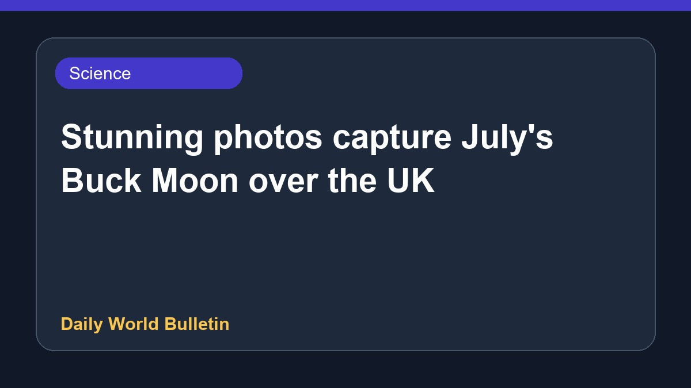

Stunning photos capture July's Buck Moon over the UK

Skygazers across the United Kingdom captured brilliant photographs of July's full Moon, commonly known as the Buck Moon, as it rose on Wednesday evening. The celestial event provided striking visual opportunities for astronomy enthusiasts and photographers alike, who shared their remarkable images of the lunar display. Further details regarding specific viewing locations or scientific aspects of the full Moon are currently limited based on the available reports.
Original source: BBC Science
Stunning photos capture July's Buck Moon over the UK ↗
Stunning photos capture July's Buck Moon over the UK ↗